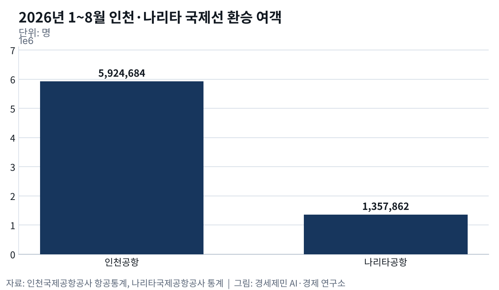
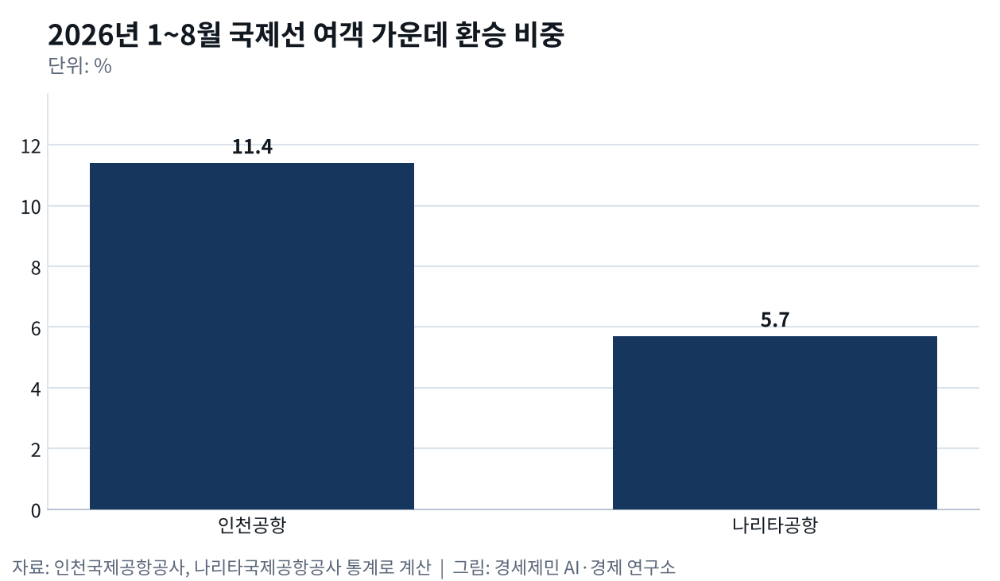

나리타 환승 6%↓ 인천 20%↑, 도쿄와 다투는 일본발 미주 환승
- 1~8월 인천 환승 592만명 20%↑, 나리타 136만명 6%↓
- 델타 2027년 나리타 복귀 발표, 일본 지방 연결은 인천으로
- 하네다 미국 노선 하루 12편씩 증편, 도쿄 두 공항 연 100만회 목표
올해 1~8월 인천공항 국제선 환승 여객은 592만4684명이다. 인천국제공항공사 항공통계를 보면 1년 전보다 19.6% 늘었다. 같은 기간 도쿄 나리타공항 환승 여객은 135만7862명으로 6% 줄었다.

나리타국제공항공사 통계로 나리타 국제선 여객은 2% 늘었는데 환승만 뒷걸음쳤다. 두 공항 모두 환승 여객을 도착과 출발로 두 번 센다. 같은 자로 잰 국제선 여객 가운데 환승 비중은 인천 11.4%, 나리타 5.7%다.
한국과 일본과 중국은 한 덩어리로 도는 경제블록이고 그 안에서 공항끼리 갈아탈 승객을 다툰다. 수도권을 오가는 국제선 승객에게 인천은 대안이 좁은 관문이다. 그러나 갈아탈 승객에게는 도쿄 두 공항이 바로 옆 대안이다.
하네다가 국제선을 넓힌 2014년, 꺾인 인천 환승
도쿄에는 하네다와 나리타, 큰 공항이 둘 있다. 1978년 나리타가 문을 연 뒤 하네다는 국내선을, 나리타는 국제선을 맡았다. 국내선과 국제선이 갈라져 일본 지방 승객은 도쿄에서 비행기를 갈아타려면 대부분 하네다에서 나리타로 공항을 옮겨야 했다.
일본은 2010년 10월 하네다 네 번째 활주로를 연 뒤 하네다에 국제선 정기편을 본격적으로 받았다. 일본 고베대와 네덜란드 SEO 경제연구소 연구진이 2012년 이 변화를 분석했다. 국제선 재개 뒤 일본발 아시아·유럽·북미 연결 시장에서 하네다 점유율이 크게 올랐다.

연구진은 하네다에 몰린 촘촘한 국내선이 새 국제선과 잘 이어진 덕으로 봤다. 일본 지방 승객이 도쿄 한 공항에서 바로 미국행으로 갈아탈 길이 열린 셈이다. 그 길은 인천을 거쳐 미국으로 가던 일본 승객이 쓰던 길과 겹친다.
일본은 2014년 하네다 국제선을 더 늘렸다. 공사 항공통계로 그해 인천 국제선 환승 여객은 640만9401명으로 1년 전보다 42만명(6.2%) 줄었다. 다른 요인도 겹쳤지만 도쿄가 문을 넓힌 해에 인천 환승이 꺾였다.
델타가 떠났다 돌아오는 나리타, 일본 지방 연결은 인천으로
2020년 3월 하네다 국제선 발착이 연 약 4만회 늘었다. 낮 시간 미국 노선은 두 나라 항공사 몫이 각각 하루 12편씩 늘었다. 도쿄가 문을 넓히자 미국 항공사 셈법도 바뀌었다.
델타항공은 2020년 3월 나리타 허브를 닫고 미국~도쿄 노선을 모두 도심에서 훨씬 가까운 하네다로 옮겼다. 나리타에서 싱가포르와 마닐라로 이어 주던 노선은 접었고 나리타~마닐라 노선은 인천~마닐라로 바꿨다.
델타는 동맹 항공사가 일본에 없어 아시아 연결을 대한항공과 맺은 조인트벤처(공동 영업)로 인천에서 하기로 했다. 도쿄는 들르는 도시가 되고 인천이 갈아타는 공항이 됐다. 항공사가 허브를 옮기면 공항 환승도 따라 옮긴다.

그 델타가 나리타로 돌아온다. 델타는 8월 7일 시애틀~나리타 노선을 2027년 3월 27일부터 매일 띄운다고 발표했다. 같은 발표에서 대한항공과 맺은 조인트벤처로 인천을 거쳐 일본 여러 도시로 잇는 연결도 함께 내세웠다. 도쿄는 다시 찾되 일본 지방 연결은 인천에 맡기는 셈이다.
일본 지방 도시 승객은 도쿄 대신 인천에서 갈아타기도 한다. 서울시립대 연구진은 2019년 나리타와 인천을 지방 도시에 잇는 노선 경쟁력을 견줬다. 한국 항공사가 일본 지방공항 노선을 띄워 일본 지방 승객을 인천으로 끌어온다고 분석했다. 나리타는 국내선이 적어 이 승객을 잡기 어렵다고 봤다.
같은 바람에 엇갈린 2026년, 인천 20%↑ 나리타 6%↓
올해 인천과 나리타는 중동 전쟁이라는 같은 바람을 맞았다. 2월 28일 미국과 이스라엘이 이란을 공습한 뒤 중동 하늘길이 막혔다. 인천 환승 여객은 3~7월 매달 1년 전보다 29~35% 늘었고 8월에도 19% 늘었다.
나리타 환승 여객은 같은 기간 다른 길을 걸었다. 3월과 4월 환승 여객이 각각 9%, 6% 늘었다가 5월과 6월에는 17%씩 줄었다. 7월에도 10%, 8월에도 3% 줄었다. 같은 바람이 불었는데 갈아탈 승객은 도쿄보다 인천으로 몰렸다.
[도표1] 2026년 1~8월 인천공항과 나리타공항 환승 여객 1년 전 대비 증감률(인천국제공항공사, 나리타국제공항공사 통계로 계산)
도쿄는 연 100만회로 간다
일본 정부는 하네다와 나리타 두 공항을 연 약 100만회 발착으로 키운다. 일본 국토교통성은 2025년 국토교통백서에 이 목표를 적었다. 나리타는 세 번째 활주로를 새로 놓아 연 50만회로 늘린다.
인천이 도쿄에 맞서 내세울 무기는 갈아타는 시간이다. 공사와 국토교통부는 미국 당국과 손잡은 위탁수하물 원격검색을 6월 23일 로스앤젤레스·시애틀로 넓혔다. 인천에서 부친 짐을 엑스선 영상으로 미국에 미리 보내 도착 공항 재검사를 생략한다.
대한항공·델타항공 승객이면 애틀랜타 등 미국 공항 5곳에서 갈아타는 시간이 약 20분 준다. 인천을 거쳐 미국으로 가는 다른 나라 출발 승객도 같은 혜택을 받는다.
대한항공은 2025년 8월 애틀랜타 노선에 처음 도입한 뒤 미국 공항에서 세관 직원과 마주치는 절차가 65% 넘게 줄었다고 밝혔다. 일본 지방 승객이 인천을 고를 까닭이 하나 더 생겼다.
도쿄가 활주로를 늘리면 인천에서 갈아타던 일본 승객은 다시 도쿄로 갈 수 있다. 올해 20% 반등은 노선과 시간으로 굳히지 않으면 지키기 어렵다. 블록 안 환승 경쟁은 도쿄 활주로와 인천 연결 속도 가운데 무엇이 먼저 앞서느냐에 달렸다.
※ 이 기사는 AI 프로그램 클로드를 활용해 작성했습니다.

이 기사는 인공지능을 활용해 작성했습니다. 사실관계는 저자가 확인했습니다.
참고문헌
기관 자료
- 인천국제공항공사, 「인천공항 통계보기 — 시계열 통계(국제선 여객·환승승객, 2013~2026년 8월)」, 2026년 10월 11일 조회. https://www.airport.kr/fsmFsn/co_ko/statisticCategoryOfTimeSeries.do
- 인천국제공항공사, "국토부-인천공항공사, 위탁수하물 원격검색(IRBS) 서비스 확대… 미국 입국·환승수속 빨라진다", 2026년 6월 23일. https://www.airport.kr/bbs/co_ko/84/139434/artclView.do
- Narita International Airport Corporation, 「Narita Airport Traffic Statistics 2026(Jan-Dec)」, 2026년 10월 1일. https://www.narita-airport.jp/en/company/airport-operation/operation/
- 国土交通省, 「東京国際空港（羽田空港）再拡張事業の供用開始について」(D활주로 2010년 10월 21일 供用, 국제 정기편 10월 31일 就航), 2010년 5월 14일. https://www.mlit.go.jp/report/press/cab07_hh_000027.html
- 国土交通省, 『国土交通白書 2025』 第Ⅱ部 第5章 第1節 「航空ネットワークの整備」, 2025년. https://www.mlit.go.jp/hakusyo/mlit/r06/hakusho/r07/html/n2513000.html
연구 논문
- Lieshout, R., & Matsumoto, H., "New international services and the competitiveness of Tokyo International Airport", 『Journal of Transport Geography』 22, 2012년 5월, pp.53-64. https://hdl.handle.net/20.500.14094/90003549
- Eie, W. Y., Hong, J., & Park, D., "Evaluating the Competitiveness for Major International Airports in Northeast Asia", 『KSCE Journal of Civil Engineering』 23(2), 2019년 2월, pp.844-849. https://doi.org/10.1007/s12205-018-0254-9
언론기사
- 문정우, "(인천공항 이대로?)②환승률 '급감'..허브공항 입지 '흔들'", 뉴스토마토, 2015년 1월 29일. https://newstomato.com/ReadNews.aspx?no=531789
- 박준철, "[현장에서]인천공항, 환승률 감소·잿밥 싸움에 '멀어지는 허브공항'", 경향신문, 2015년 2월 3일. https://www.khan.co.kr/article/201502032144025
- 박상용, "밑천 드러낸 '세계 허브화 전략'…환승객 급감", 노컷뉴스, 2015년 4월 20일. https://nocutnews.co.kr/news/4400271
- Edward Russell, "Delta to Leave Tokyo Narita for Haneda, Axes Singapore Flights", The Points Guy, 2019년 8월 1일. https://thepointsguy.com/news/delta-to-leave-tokyo-narita-for-haneda-axes-singapore-flights/
- Evan Ramstad, "Delta Signals the Final Phaseout at Tokyo's Narita Airport", Star Tribune(Aviation Pros 전재), 2019년 8월 6일. https://www.aviationpros.com/ground-support-worldwide/airlines/news/21091496/delta-signals-the-final-phaseout-at-tokyos-narita
- 「羽田空港の国際線、年間3.9万回増便へ、新飛行ルートを2020年3月末から運用開始、国交省が正式発表」, トラベルボイス, 2019년 8월 8일. https://www.travelvoice.jp/20190808-135872
- 「デルタ航空、来春から羽田空港に完全シフトへ、成田からは撤退を正式表明」, トラベルボイス, 2019년 8월 10일. https://www.travelvoice.jp/20190810-136037
- Tadayuki YOSHIKAWA, 「ユナイテッド航空、羽田4路線新設 20年3月発着枠増枠、シカゴ、LA、ニューアーク、ワシントンDC」, Aviation Wire, 2019년 8월 17일. https://www.aviationwire.jp/archives/181236
- 「国交省、羽田国際線の増枠で日米航空会社とも「1日12便」を正式決定」, トラベルボイス, 2019년 8월 21일. https://www.travelvoice.jp/20190821-136526
- Tadayuki YOSHIKAWA, 「羽田空港、旅客便の試験飛行を20年1月実施へ 新飛行経路」(국제선 연 6만→9만9000회, 하루 50枠 중 미국 24枠), Aviation Wire, 2019년 8월 29일. https://www.aviationwire.jp/archives/182213
- 乗りものニュース編集部, 「成田空港「新滑走路」今日本格着工！…」(연 30만→50만회, 2029년 3월 말 供用 예정), 乗りものニュース, 2025년 5월 25일. https://trafficnews.jp/post/550667
- 이유정, "LA·시애틀서 환승때 짐 따로 안부쳐도 된다", 한국경제, 2026년 6월 23일. https://www.hankyung.com/article/2026062335601
- 강남주, "인천공항, LA·시애틀 노선도 수하물 원격검색…수속 시간 단축", 서울신문, 2026년 6월 23일. https://go.seoul.co.kr/news/newsView.php?id=20260623500155
- 이윤화, "대한항공·델타항공, 위탁수하물 원격 검색 시애틀·LA 확대", 이데일리, 2026년 6월 23일. https://v.daum.net/v/20260623135151336
- Delta Air Lines, "A new way to Tokyo: Delta to launch new Seattle–Tokyo Narita service in March 2027", Delta News Hub, 2026년 8월 7일. https://news.delta.com/new-way-tokyo-delta-launch-new-seattle-tokyo-narita-service-march-2027
- David Casey, "Delta Plans Tokyo Narita Return As Seattle Rivalry Grows", Aviation Week, 2026년 8월 7일. https://aviationweek.com/air-transport/airports-networks/delta-plans-tokyo-narita-return-seattle-rivalry-grows
- "Delta to resume Seattle-Tokyo Narita flights in 2027", InsideFlyer, 2026년 8월 7일. https://www.insideflyer.com/posts/delta-to-resume-seattle-tokyo-narita-flights-in-2027/